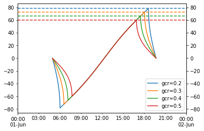
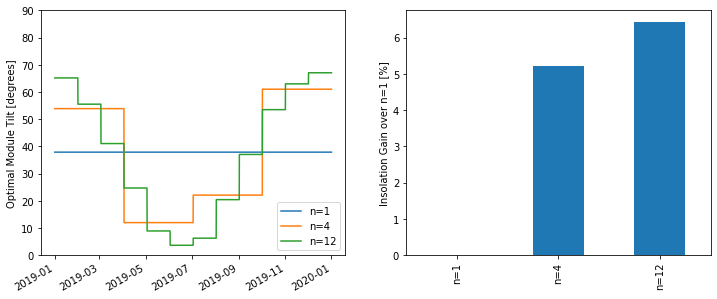

Posted in 2021
Ground-to-sky viewfactor
- 2021-12-29
This post shows two things:
How to calculate, in an infinite sheds model, the view factor to the sky from a point underneath the array

LED I-V Curves
- 2021-12-25
I thought it would be fun to do some quick-and-dirty measurements of the I-V characteristic of some LEDs I had laying around. I have no idea where they came from, but one is red and one is white.
Fun fact: white LEDs, which of course would require many junctions of varying bandgap to produce white light directly, are often implemented by coating a blue LED in a phosphor that downconverts some photons into the rest of the visible spectrum.

Single-axis tracking: GCR vs max angle
- 2021-09-30
Single-axis tracker rotation angles are commonly limited by the hardware’s maximum allowed rotation (45 and 60 degrees are common limits). For arrays with backtracking activated, the time spent at max angle depends on GCR: the higher the GCR, the more the array backtracks, and the less time it spends at max angle. So at some sufficiently large GCR the array will just touch max angle for an instant before it starts backtracking. I don’t have a situation in mind for when this might be useful, but it seemed like a fun math problem to determine that boundary GCR.
The approach here is focused on the point on the tracking curve when backtracking is about to begin, as that represents the maximum realized angle of the tracker. We start with Equation 14 from NREL Technical Report 76626 (PDF):
Seasonal tilt optimization
- 2021-09-27
Playing around with optimizing the tilt of a south-facing adjustable-tilt collector to maximize total insolation capture.
Normal fixed tilt – no seasonal changes
Basic SIMD in Julia
- 2021-08-20
This post summarizes what I’ve learned from a few places on the web (mostly Wikipedia and this thread on the Julia Discourse). I am indebted to countless people in the open-source community and Chris Elrod’s posts in that thread are a stand-out example.
SIMD (single instruction, multiple data) is a cool feature of modern CPUs that allows more than one value to be operated on in a single instruction. This is sort of “closer to the metal” than traditional parallel processing techniques (multiprocessing, multithreading) in that the OS doesn’t have a role in making it happen – it’s just a special type of CPU instruction. As a simple example, a CPU capable of 64-bit SIMD could load two 32-bit ints at once and apply some operation to both of them, instead of loading and operating on them one at a time.

Daily EIA Data
- 2021-08-11
I found an EIA tool that reported the daily net generation breakdown for the lower 48. I didn’t check if its API endpoint is documented anywhere (who needs documentation when web browsers come with built-in developer tools?) but it’s pretty straightforward and I played around with the data a bit. Its monthly sums more or less match the generation numbers in Table 7.2b (see this page), although there are some small differences, maybe because of excluding Hawaii and Alaska? Unfortunately it doesn’t seem to report any data prior to 2018-07-01.
Grab the entire dataset:

Marvin the antlion
- 2021-08-04
The antlion, cousin of the lacewing, is a strange little pit-digging insect. In their adult forms, they’re among Mother Nature’s great works of art:
Adult lacewings are a fairly common (but by no means unwelcome!) sight in North Carolina, fluttering delicately on an evening breeze. However, to stumble over the lacewing in its larval form takes, in my experience, a much more keen eye. The larvae are fierce predators, some of whom have an interesting habit of carrying shields on their backs made of lint, detritus, and whatever else they can get their grubby little mitts on. I, by accident, encountered a fine specimen on an NC Oak tree. I took a video where you can sort of make out its legs and mandibles when it’s flipped over:

Comparing PSM3 and MERRA2 GHI
- 2021-08-03
MERRA2 is a global weather reanalysis dataset providing, among other things, hourly GHI data. I’m not very familiar with MERRA2 and wanted to do a quick comparison with PSM3 (which I am quite familiar with) just to get a rough handle on how the two datasets compare when it comes to irradiance data.
Important notes if you want to run this notebook yourself:

T_cell_typ_avg
- 2021-06-17
This is a short note that derives the “typical average cell temperature” used in the “Weather-Corrected Performance Ratio”. The Weather-Corrected Performance Ratio [1] is defined as:
The denominator is essentially the PVWatts DC model, except the reference cell temperature is not \(T_{\mathrm{STC}}\) but rather a “typical/average” cell temperature. The report has this to say about that decision:
Floating Point Fun
- 2021-03-09
Computers must represent real numbers with some finite precision (ignoring symbolic algebra packages), and sometimes that precision limit ends up causing problems that you might not expect. Here are a couple examples.
The function \(f(x) = \exp(x) - 1\) is kind of fun – by subtracting one from the exponential, it removes the only constant term in the Maclaurin series of \(\exp(x)\):